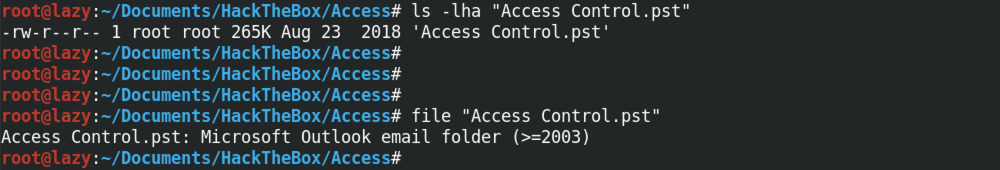
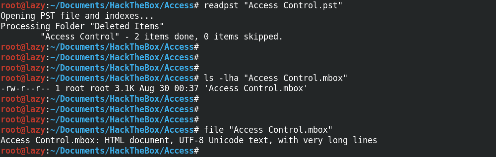
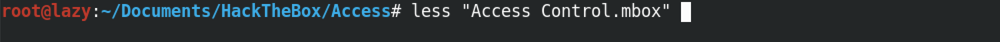
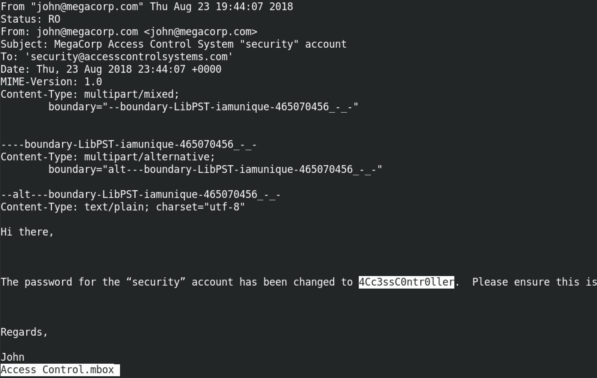

February 26, 2021
In this tutorial we will see how to open .pst files in a inux terminal. There are accounts, such as POP accounts, that store information in Outlook Data Files (.pst files) on the local computer. And .mbox files contain organized email messages in a single file. And it saves messages one after another in a single file.
When you add an email account to Outlook, a local copy of your information is stored on your computer. This feature allows you to access your previously downloaded or synchronized email messages, calendar information, contacts, and tasks without an internet connection.
Certain types of accounts, such as POP accounts, store their information in Outlook Data Files (.pst files). Outlook 365 accounts, Exchange accounts, IMAP accounts, and Outlook.com accounts store their information in Offline Outlook Data Files (.ost files).
An MBOX file is an email mailbox saved in a mail storage format used for organizing email messages in a single text file. It saves messages in a concatenated format where each message is stored after another, starting with the "From" header. MBOX files were originally used by Unix hosts but are now supported by other email applications, including Apple Mail and Mozilla Thunderbird.
So, we have a .pst file called Access Control.pst. Its size is 265K. Running the file command on this file shows that it is a "Microsoft Outlook email folder (>=2003)".
Next, we use readpst to extract the contents of the .pst file. If not installed on the system, then it can be installed by running apt-get install readpst. Once we run this command, it shows that it has another file inside it called "Access Control.mbox".
We can open this .mbox file with less or cat. For this example, I am using less to open the file as it can be a large file and it is easier to read it with less.
This shows the contents of the .mbox file. This is an email sent from john@megacorp.com to security@accesscontrolsystems.com. It shows some header information and the body of the email message as well.
You can follow me on Twitter 0xmaCyberSec.